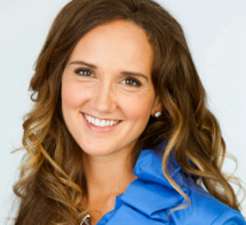

America’s Violinist, Jenny Oaks Baker is a Grammy Nominated, Billboard No. 1 performer and recording artist. She received her Master of Music degree from the renowned Juilliard School in New York City and her Bachelor’s Degree in violin performance from the Curtis Institute of Music in Philadelphia.
She has performed as a soloist at Carnegie Hall, Lincoln Center, Strathmore Hall, the Library of Congress and as a guest soloist with The National Symphony, Jerusalem Symphony, Pittsburgh Symphony, Utah Symphony, and the internationally acclaimed Mormon Tabernacle Choir. Over the years Jenny has collaborated with such luminaries as Gladys Knight, Kurt Bestor, Marvin Hamlisch, and the former Secretary of State Condoleezza Rice.
Music from her Grammy Nominated Album, “Wish Upon a Star” is featured at Disney’s Magic Kingdom and Disneyland to introduce their nightly fireworks shows. Jenny’s albums consistently chart on Billboard, with her 2010 album "Then Sings My Soul" hitting the #1 spot on the Top Classical Albums chart two weeks in a row.
The Jenny Oaks Baker YouTube Channel features Jenny's inspiring and entertaining music videos and enables more people throughout the world to experience the thrill of her music and performance. These videos have been enjoyed by nearly 10 million viewers and are partially made possible through Jenny's Patreon.
With her extensive performing and recording careers in addition to her superlative education, Jenny is an esteemed expert and has served as a judge for The Stradivarius International Violin Competition. She is also the recipient of the Utah Governor’s Mansion Artist Award for Excellence in Artistic Expression.
Jenny has released eighteen studio albums since 1998. They have sold over a million copies and consistently chart on Billboard. Jenny’s emotionally stirring music has also been featured on the soundtracks of many films, and her popular music videos can be viewed on her Youtube Channel.
For seven years, Jenny Oaks Baker performed as a first violinist in the National Symphony Orchestra before resigning in 2007 to devote more time to her young family. Jenny, her husband, and their four musical children reside in Salt Lake City, UT. Jenny and her children perform together throughout the world as Jenny Oaks Baker & Family Four.